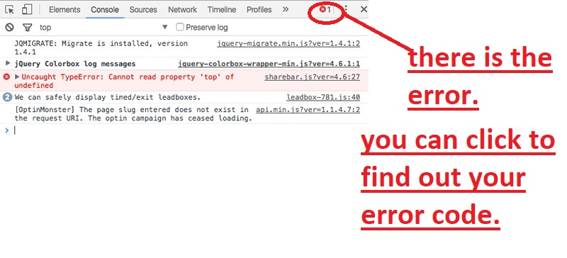

Readability codes are importance in many way for software developer because if the code is easy to read, it will be easy to understand which makes it easy to debug, maintain and extend. The most common technique of making your code more readable is consistency. Consistency means in coding is style, shape, naming conventions and structure. The structure of the code should be the same between plugins, so when you are debugging and reading those plugins you can easily spot them out.
Modern coding guides for web pages development is for programmer to be more effectively when coding. When a huge project to development, modern coding ways is effectively helps in many way such as readability. When other developers are modifying or debugging the modern coding ways save their times to search, so that a project will go more successfully.
My favourites coding guide is using tab button. When I'm entering the plugins, I'll use tab to make plugins to stay at the same line and using tab save my times. If i want to refer back my code it would easy to find out because the lineup are clearly showed.
The common tools used to debug CSS or HTML problems is inspect from Google Chrome. You can find it at Google Chrome browser, right click on the webpage and u can see inspect. Inspect is allow you to directlly change code and see the result, so that you don't need to go back to your html code make changes then save to see the result. When your code doesn't work on page, inspect element will show you wheres the problem so that you can easily check out.
Version control tools is type of communication, but it got other functions. Version control tools can start a project or a repository, a team can be easily dicuss or solve problems. Thess tools can help a team collaboration on a project. For example, when all members are rewriting the code of project. The code file will be recorded by date and time so that other members can check back at the history, won't missed any information. If the codes is rewriting at the same times by members, version control will avoid the not matching up codes if the codes is fixed. Version control in a project does have many branches, so if a branch have problems it won't affect the project so won't have any argument. Version control bring many benefits for team collaboration.
CSS framework have the benefits for developers. Bootstrap is one of the CSS framework, the benefits are easy to use just have to embed the code to your css. Besides that, it is reponsively on page because mobile devices persist to grow hugely popular. Next, web developers can make a choice to select the aspects which are required, which can be simply complete by utilizing Bootstrap customize page. CSS framework are for standard webpage so that some developers no need to code all the structure everytime.